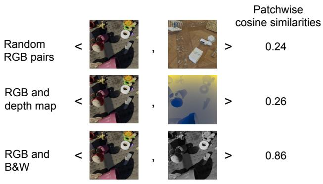

A Mixed Diet Makes DINO An Omnivorous Vision Encoder Rishabh Kabra, Maks Ovsjanikov, Drew A. Hudson, Ye Xia, Skanda Koppula, Andre Araujo, Joao Carreira, Niloy J. Mitra；CVPR PDF 显示机构包括 Google DeepMind 和 University College London。 arXiv 更新 + CVPR 2026 Highlight 原文链接
Figureure 2 · Omnivorous Vision Encoder architectureFigure 2. Omnivorous Vision Encoder architecture. A frozen encoder $f ^ { * }$ extracts features $z _ { m } = f ^ { * } ( x _ { m } )$ from a spectrum of modalities denoted m (Segmentation, RGB, Depth). A trainable modality-agnostic adapter g maps these features into a common, aligned embedding space, producing a modality-invariant representation $h = g ( z _ { m } )$ . A convenient implementation of this architecture uses the early layers of a pretrained network as the frozen part $f ^ { * }$ , and the later layers as the adapter g.这张图概括 A Mixed Diet Makes DINO 的整体方法流程。阅读时先看模块之间传递的训练信号，再看作者如何把目标拆成可优化的子问题。

Figureure 1 · Off-the-shelf vision encoders like DINO show poor cross-modal alignmenFigure 1. Off-the-shelf vision encoders like DINO show poor cross-modal alignment. We show the similarity in feature space between randomly paired RGB images (top), between RGB images and depth maps of the same scene (middle), and between RGB and grayscale images of the same scene (bottom). While the numbers vary depending on the dataset, the pattern of misalignment between visual modalities remains consistent. Our proposed adapter aligns these modalities in an existing feature space.这张可视化用来解释 A Mixed Diet Makes DINO 学到的中间表征或对齐关系。重点看它是否支持正文里的机制判断。
核心问题
通用视觉自监督不能只优化 RGB 图像语义；跨视觉模态共享 feature space 是通用表征的重要下一步。